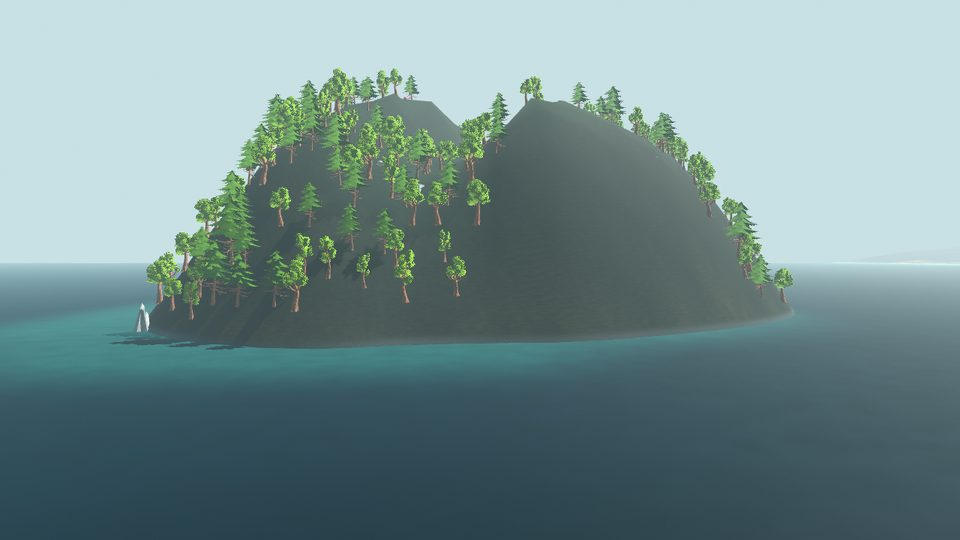
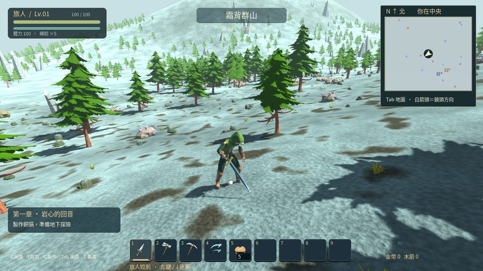
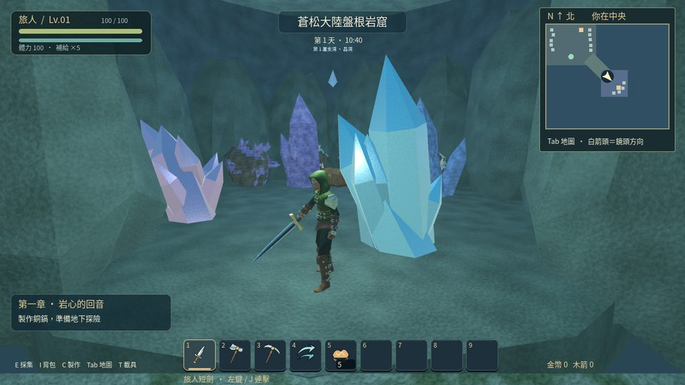
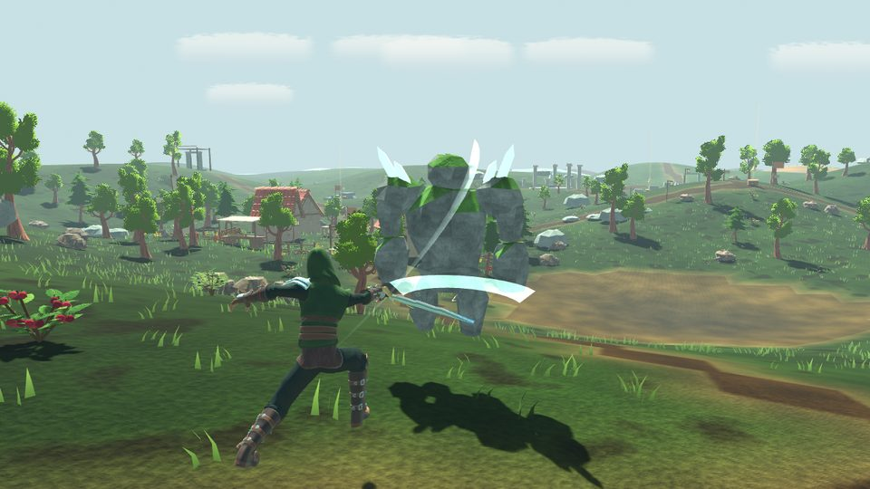
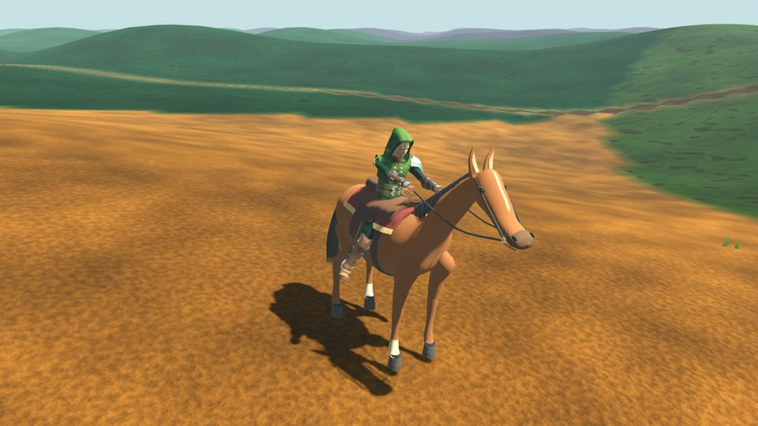
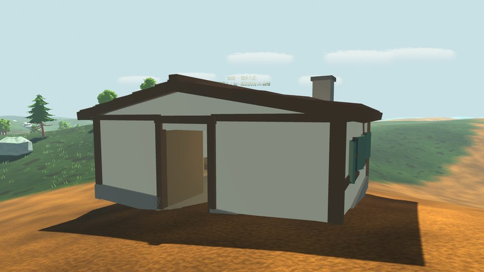

三個步驟開始玩
1下載啟動器按上方綠色按鈕，下載 StarleafLauncher.exe。
2打開它第一次會自動下載遊戲（約 330 MB），並在桌面建立「契約之島」捷徑。
3按「開始遊戲」以後從桌面捷徑打開即可，新版本會自動下載，只下載有變動的部分。
如果出現藍色視窗「Windows 已保護您的電腦」
這是因為啟動器沒有購買商業簽章憑證，並不是病毒。請按視窗中的 「其他資訊」，再按 「仍要執行」。
遊戲檔案每一塊都經過數位簽章與完整性驗證，被竄改的檔案不會被安裝。
遊戲檔案每一塊都經過數位簽章與完整性驗證，被竄改的檔案不會被安裝。
遊戲畫面






最新版本：0.9.0《契約之島》
- 遊戲改名《契約之島》，新圖示與新啟動器
- 頭目契約：打敗頭目後可讓牠成為坐騎（含飛行與海上）、戰鬥夥伴或村莊守護者
- 18 位頭目全新原創外型與招式，召喚物與召喚小夥伴全部重做
- 弓箭蓄力；邊走邊攻擊不再原地滑行
- 真實質感的地面、半埋在土裡的礦石、布料質感的角色衣服
- 上一版：
- 頭目、居民、武器、礦石、盔甲、飾品與怪物全面換上星葉之島自己的名字
- 移除舊的三王試煉庭說明：到頭目所屬的地區使用召喚物即可
- 上一版：
- 地獄傳送門：從星葉村走進去就到熔火裂谷，另有回村傳送門
- 熔火裂谷變成真正的地獄：紅色天空、火星、會灼傷的岩漿池、黑曜石尖塔與火山口
- 上一版：
- 盔甲背面與腿後加上護甲，不再破洞或只有黑褲子
- 物品圖示全面整理：統一大小、描邊，約 100 個改成 3D；寶藏袋、金屬錠重新設計
- 依地區、夜晚、地底、事件與 Boss 自動換音樂；建造、開箱、喝藥水等新音效
- 設定畫面：音樂／音效音量、畫質、FPS 顯示、按鍵設定
- 居民與怪物體型更多樣；地牢、神廟加上窗戶、藤蔓與室內擺設
- 上一版：
- 新地標：地牢、金字塔、烈陽神廟、兩座空島（守衛與寶箱，地圖有標記）
- 新飾品：沙旋瓶、飛毯
- 上一版：
- 天氣：下雨、雷雨、凝膠雨
- 南瓜夜祭、霜夜祭：5 波節慶怪物
- 新居民：旅店老闆、慶典女孩、收租人、菇菇人、機械助手
- 難度（經典／專家／大師）與怪物圖鑑；蒼銀砧、玄鋼熔爐、遠古操縱機
- 上一版：
- 藥草、玻璃瓶、煉藥台與 12 種藥水（鐵皮、迅捷、再生、夜視、鰓、羽落等）
- 死亡時一半金幣留在原地，走回去撿回（地圖有標記）
- 引路人會依進度提示下一步
- 上一版：
- 建造修正：門和牆不會再陷進地板或土裡；中鍵複製建材
- 家具有地方就能擺（壁燈、掛畫、旗幟可掛牆），儲物箱與快速堆疊
- 梯子、屋頂轉角、玻璃窗、石門、鐵門、自動門、壓力板、飛鏢陷阱
- 鉤爪：按 F 抓住牆或樹把自己拉過去
- 上一版：
- 居民會搬進你用建材自己蓋的房子（牆、地板、屋頂、門，加上桌椅與燈）
- 新家具：木桌、木椅、木床、燈籠；三角山牆封住屋頂兩端
- 連線更順：怪物同步資料大幅縮小；建材不再穿過樹木
- 自由建造：建築槌、地板／牆／柱／梁／屋頂自動吸附，支撐度顏色
- 防守：尖木柵欄、尖刺陷阱、木門與大門；入侵怪物會打牆，可免費修理
- 上一版：
- 釣魚：三種釣竿、9 種地區魚、木／鐵／金寶匣，營火烤魚
- 傳送塔：每個地區放一座，站在旁邊開地圖就能瞬間移動
- 新事件：日食（科學怪人、吸血鬼、死神）與海盜入侵（進度條、海盜船長）
- 新居民：漁夫（每日釣魚委託）與海盜
- 連線修正：客戶端飾品的減傷與回血生效；事件天空與進度條所有人都看得到
多人連線時，雙方都需要是同一個版本；打開啟動器就會自動更新。
常見問題
- 存檔會不見嗎？ 不會，更新只替換遊戲程式，角色、物品與家園都保留。
- 下載到一半中斷？ 重新打開啟動器，已下載的部分會保留，繼續完成。
- 以前裝過舊版？ 直接下載這個新啟動器打開即可，會沿用已下載的檔案。